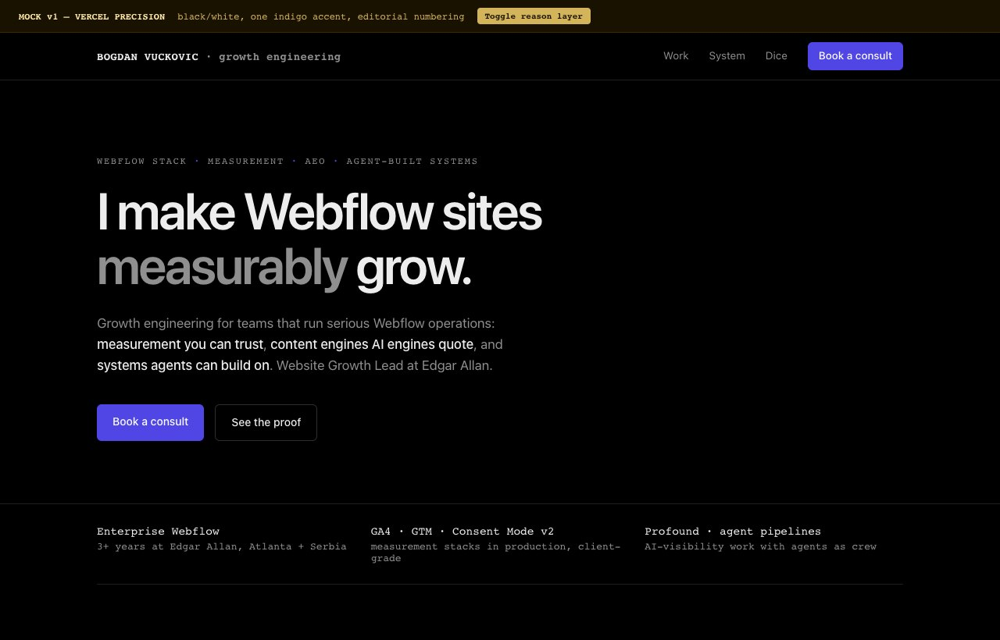
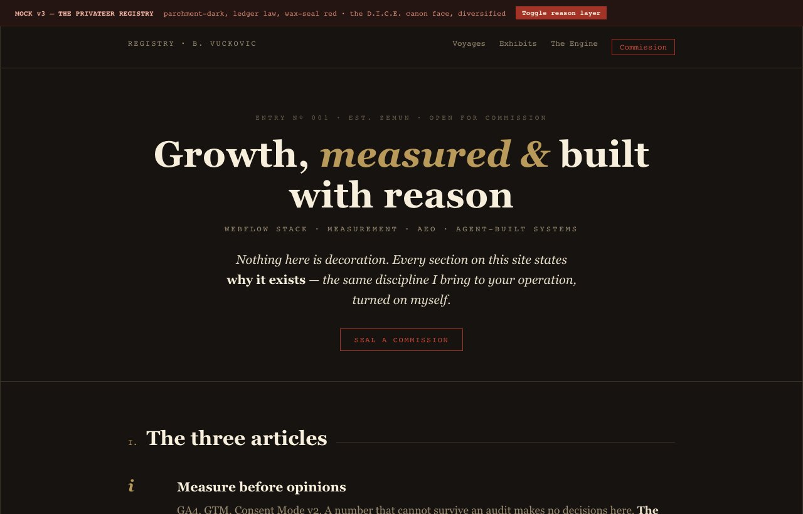
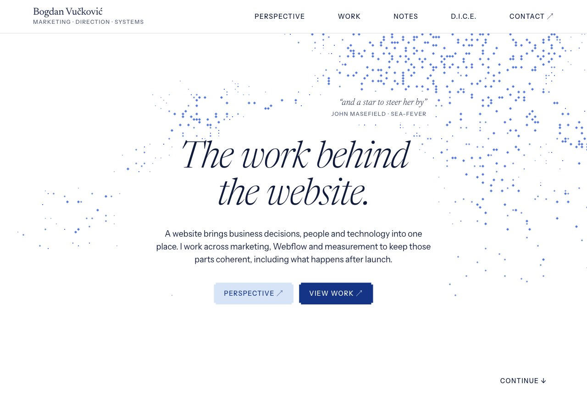

I was looking for
a creative process.
Could an AI follow one and make something I hadn’t already described?
Follow the works below. Stop for a closer look, or find your own route on the map ↗.
What if the process
was a tarot reading?
Gemini suggested a few processes I could try. Somewhere in that conversation I started wondering how you’d do a tarot reading in a chat.
While you shuffle a deck, you have a moment to sit with your question. I liked the suggestion of typing five words. That could be my shuffle. The cards that came up would shape the answer.
For me, randomness opens a door to the cosmos. The reading can bring back the answer I need to hear.
The five ideas we started with
- Oblique Strategies. Introduce a constraint that rules out the obvious answer.
- Multi-perspective critique. Let a pragmatist, an artist and a critic challenge the same draft.
- Re-classification. Borrow a structure from another field and apply it to the task.
- Recursive loops. Generate ideas, question their assumptions and try again.
- Semantic deconstruction. Turn a vague instruction into effects you can describe.
on an image.
The wolf showed us
what had to change.
blessing · Wolf · roof · katarina · vera

I gave it five words.
It drew three of them.
I’d asked for a striking image with a colour I’d never seen. When I pointed out the wolf and the roof, it asked me for a fresh set of words.
“No try the same prompt but with new system”
The next prompt kept Katarina and the wolf. It added streams of light between them.

Same brief.
Same five words.
I had to spell out what the words were for. Use them to shuffle the cards. Then read the cards against my question.
This time the prompt described a crack in white stone with liquid metal inside. I hadn’t given it stone or metal. That was the first time I could point to what I meant by randomness.
A closer look at the experiment
I tried fresh sets of words on a homepage, a game and another image. The old habit kept creeping back. Eventually I asked for instructions I could take to another model.
Read the transcript excerpts →Explore the later field tests →I still had to choose what to do with it.
A coin with
two different jobs.
Seed · the starting point chance gives you
The five stars connect to Cassiopeia, a constellation that helps you find north.
The Reckoning Coin / 11 October 2026For my website I asked for a coin with a compass on one face and a small constellation on the other. Here’s what I wrote when I saw the drawing.
oh my god can we use it? should we connect the 5 stars to cassiopeia ?
Chance opens.
The bearing is yours.
Notes from the coin brief
Claude suggested the name Reckoning Coin after dead reckoning, a way of working out your position from where you started and the course and distance you’ve travelled.
Read how the coin was designed ↗why the work belongs together.
Two days before the coin,
I got three homepage drafts.



“I hate all three directions.”
I wanted more breathing room and a serif with some character.

A website should
carry the work.
Next to the headline you could follow the work from content to platform to measurement. I kept that little diagram in the next version.
See the next versionFrom my November site review
“sitni si u velikom strašnom moru ali hrabar jer imaš cilj”
You’re tiny in a big, frightening sea, but you’re brave because you have a goal.


The same boat,
drawn differently.
Petar reworked the boat in dots and crosses, drawing on the graphics in Hermes Agent. You can see those same marks in the sky above the headline.

been told about it?
The website said one thing.
The answer said another.
I have a note from 2023 about a website that still had an old price buried in it. The AI found it.
If you’d got that answer, would you have opened the site to check?

Pick a year to see how the question developed.
It got some features wrong, too.
My July note is the record I have. I’d need the original exchange to check those details again.
Open the illustrated research ↗what are they still trying to work out?
People arrive
with different questions.
Say you run a maintenance team. You keep sending technicians back to jobs you thought were finished. What was missing on the first trip?
I made up a company called Northline Maintenance for my account-based marketing (ABM) study. On the first visit, someone from Northline reads about repeat callouts. I’d give them a worksheet and ask them to pull the last ten jobs that took two trips.
Reduce repeat visits caused by missing job information
Reads the repeat-visit article and returns to the section about technicians arriving without the right history.
A repeat-visit audit worksheet
Still sending someone back to finish a job? Review ten recent repeat visits and find which information was missing.
Open the worksheet
- Choose ten recent jobs that required an unplanned return.
- For each, record the stated reason for the second visit.
- Mark whether equipment history, parts, photos or access details were missing.
- Record when the missing information became available.
- Choose the most frequent preventable cause and one change to test.
- Review the next ten comparable jobs; compare causes, not just the raw number of visits.
Incomplete job information is a plausible concern. A return visit is not proof of buying intent.
Northline’s second visit
When someone from Northline comes back, they’re looking at shared job records. Could dispatch get the equipment history to the technician before they leave?
I’d try the shared job record with one maintenance crew and compare similar jobs before and during the pilot. I’d want to know which jobs still took a second trip, and why.
I kept the first attempts.
If you asked me what I meant by “more breathing room”, I’d pull up those three homepages I hated. You’d see it in a second. That’s why I kept them.
Explore the map